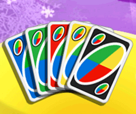

21 |
Kaarten |
 |
|
Je speelt met blauwe, groene, gele en rode kaarten die genummerd zijn van 0 tot 9. Dit zijn de basiskaarten en zij bepalen het verloop van het spel. Draw Two Volgens de standaardregels moet de volgende speler, als er een ‘Draw Two’ kaart wordt gespeeld, twee kaarten trekken uit de stapel en zijn/haar beurt overslaan. Als je speelt met de optie ‘Penalities’ (Straf) en de vorige speler speelt een ‘Draw Two’ kaart en jij hebt ook een ‘Draw Two’ kaart, dan kun je hem wegleggen zonder straf te krijgen. De speler na jou krijgt vervolgens een dubbele straf. Als hij/zij dezelfde kaart speelt, dan wordt de volgende speler gestraft. In totaal zijn er 8 ‘Draw Two’ kaarten: 2 blauwe, 2 groene, 2 rode en 2 gele.
Skip Bij het spelen van een kaart, wordt de volgende speler ge-‘skipped’ (overgeslagen). Dit houdt in dat hij/zij een beurt overslaat. Er zijn 8 ‘Skip’ kaarten: 2 blauwe, 2 groene, 2 rode en 2 gele.
Reverse Als je deze kaart speelt, verandert de spelrichting. Het spel gaat door in een andere spelrichting tot er een nieuwe ‘Reverse’ kaart wordt gespeeld. Er zijn 8 ‘Reverse’ kaarten: 2 blauwe, 2 groene, 2 rode en 2 gele.
Wild ‘Wild’ kaarten kunnen worden gespeeld na elke willekeurige kaartkleur. De speler die deze kaart speelt mag kiezen om het spel voort te zetten in een van de vier kleuren.  Wild Draw Four Als deze kaart wordt gespeeld, mag de speler niet alleen de kleur kiezen maar de volgende speler wordt ook gedwongen om vier kaarten te trekken uit de stapel en een beurt over te slaan. Maar, deze kaart mag alleen worden gespeeld als een speler geen kaart heeft in dezelfde kleur als de kaarten waarmee er wordt gespeeld. Een speler mag bluffen en zijn/haar kaart spelen ook al heeft hij/zij een kaart in dezelfde kleur als de kaarten waarmee er wordt gespeeld. Maar, als deze speler wordt uitgedaagd, dan moet hij/zij vier kaarten trekken. Let op: Als de speler een kaart heeft met een gelijk nummer of een gelijke actiekaart (‘Reverse’, ‘Skip’, ‘Draw Two’), dan mag hij/zij nog steeds conform de regels de ‘Wild Draw Four’ kaart spelen. Het is in strijd met de regels om de ‘Wild Card Draw Four’ kaart te spelen als de speler ook een ‘Wild’ kaart heeft.
Als je een ‘Wild Draw Four’ kaart gespeeld krijgt, kun je deze uitdagen door ‘Challenge’ (Uitdagen) te selecteren, of je kunt vier kaarten trekken door ‘Draw’ (Trekken) te selecteren.
|


 |
 |
 |